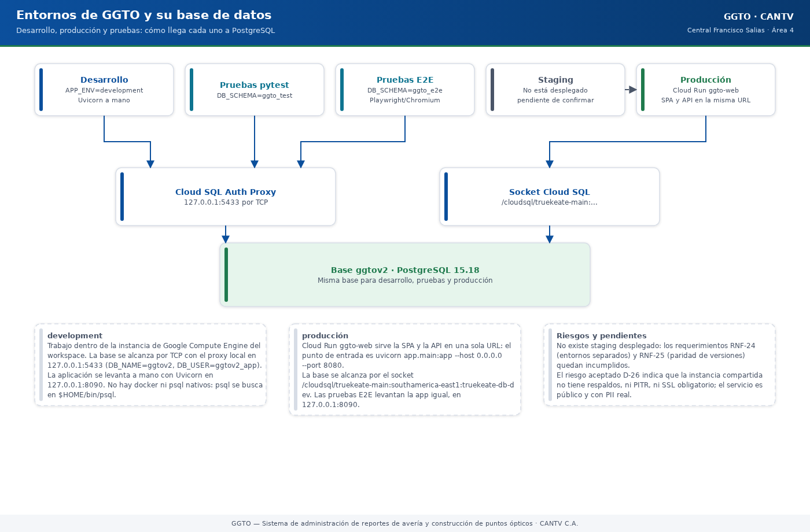

Sistema de administración de reportes de avería y construcción de puntos ópticos
Manual literal · DespliegueManual de Entornos y Variables — GGTO (CANTV, Central Francisco Salias / Área 4)
Manual para todo público. Explica, en lenguaje sencillo, dónde se ejecuta la plataforma GGTO, qué variables de configuración usa y cómo se cuidan los secretos (claves y contraseñas). Está dirigido a operadores, supervisores y administradores. Cuando un dato no pudo comprobarse, se indica como «pendiente de confirmar». Este manual nunca escribe valores de secretos: solo los nombra.
Manual para todo público. Explica, en lenguaje sencillo, dónde se ejecuta la plataforma GGTO, qué variables de configuración usa y cómo se cuidan los secretos (claves y contraseñas). Está dirigido a operadores, supervisores y administradores. Cuando un dato no pudo comprobarse, se indica como «pendiente de confirmar». Este manual nunca escribe valores de secretos: solo los nombra.
1Empezar en 5 minutos
- Averigüe dónde está corriendo el sistema. Abra en el navegador la dirección del servicio
seguida de
/api/v1/info. La respuesta trae la claveentorno. Si diceproduction, está en producción; si dicedevelopment, está en el ambiente de trabajo. - Entienda de dónde salen los valores. La aplicación lee un archivo llamado
.enven su carpeta de trabajo. Si una variable ya existe en el sistema operativo, esa manda; si la variable no está declarada, se ignora sin romper el arranque. - Nunca escriba un secreto en un archivo, en un chat ni en la línea de comandos. Los secretos
viven en Secret Manager y solo se usan por su nombre:
SECRET_KEY,DB_PASSWORD,TELEGRAM_BOT_TOKEN,SMTP_HOST,SMTP_PASSWORDyMCP_API_KEY. - No cargue datos reales todavía. La base actual (
truekeate-db-dev) no tiene respaldos ni recuperación a un punto en el tiempo, y el servicio es público. El riesgo D-26 prohíbe cargar datos reales hasta migrar a la instanciaggtov2-pgcon backups, PITR y SSL. - Para probar, use un esquema aislado.
pytesttrabaja en el esquemaggto_testy las pruebas de navegador Playwright enggto_e2e. Así ninguna prueba toca los datos de producción.
2Entornos
La aplicación lee su entorno desde la variable app_env (en el sistema operativo, APP_ENV). Si
nadie la define, el valor por defecto es development. Ese valor se publica tal cual en el endpoint
de metadatos GET /api/v1/info bajo la clave entorno. Gracias a eso, cualquier persona puede
averiguar en qué entorno corre el proceso consultando ese endpoint, sin abrir la consola de Google
Cloud.
La configuración se resuelve con la librería pydantic-settings. La clase Settings está
configurada para leer un archivo .env del directorio de trabajo, ignorar las variables que no
declara (sin romper el arranque) y no distinguir mayúsculas de minúsculas en los nombres. Las
variables del sistema tienen prioridad sobre el archivo. La configuración se guarda en memoria una
sola vez por proceso (mediante @lru_cache sobre get_settings()), para que sea única y rápida.

Código del gráfico (Mermaid)
flowchart TD
A["Desarrollo<br/>APP_ENV=development"] --> P["Cloud SQL Auth Proxy<br/>127.0.0.1:5433"]
B["Producción<br/>Cloud Run ggto-web"] --> S["Socket Cloud SQL<br/>/cloudsql/truekeate-main:..."]
C["Pruebas pytest<br/>DB_SCHEMA=ggto_test"] --> P
D["Pruebas E2E Playwright<br/>DB_SCHEMA=ggto_e2e"] --> P
E["Staging<br/>no desplegado"] -.->|"pendiente de confirmar"| B
P --> DB[("Base ggtov2<br/>PostgreSQL 15.18")]
S --> DB2.1development
Es el entorno de trabajo dentro de la instancia de Google Compute Engine del workspace
(/home/dsh/workspace), con el usuario dsh. En esa máquina están disponibles python3, node,
npm, gcloud y git. En este entorno:
- El valor documentado para el archivo de entorno es
APP_ENV=development. - La base de datos se alcanza por TCP a través del proxy local:
DB_HOST=127.0.0.1,DB_PORT=5433,DB_NAME=ggtov2,DB_USER=ggtov2_app. - La aplicación se levanta a mano con Uvicorn, igual que hace la rutina de pruebas E2E:
python3 -m uvicorn app.main:app --host 127.0.0.1 --port 8090. - No hay
dockerni clientepsqlinstalados de forma nativa. El clientepsqlse busca en$HOME/bin/psqly, si no está, se usa elpsqldelPATH.
2.2staging
No existe un entorno de staging (preproducción) desplegado y verificado en la infraestructura
actual. El requerimiento RNF-24 exige «entornos separados dev/staging/prod» y el
requerimiento RNF-25 exige paridad de versiones entre desarrollo y producción. Sin embargo, el
estado real del despliegue solo registra el servicio de producción en truekeate-main.
El valor que deba usarse en APP_ENV para staging y el proceso concreto de promoción entre
entornos están pendientes de confirmar.
2.3production
Es el entorno donde corre el servicio Cloud Run ggto-web, desplegado temporalmente en el
proyecto truekeate-main y en la región europe-west1. En producción:
- El servicio se conecta a la base mediante el socket de Cloud SQL:
DB_HOST=/cloudsql/truekeate-main:southamerica-east1:truekeate-db-dev. - El valor de
APP_ENVen la revisión desplegada está pendiente de confirmar. El guion de despliegue del repositorio solo declaraDB_USER,DB_NAME,DB_HOSTySECRET_KEY; no incluyeAPP_ENV. La documentación del servicio desplegado indica queGET /api/v1/inforespondía"entorno":"production", por lo que el valor debió fijarse fuera del guion o quedar por defecto en la revisión; la fuente exacta está pendiente de confirmar. - El servicio tiene acceso público (para
allUsers) y contiene PII real (datos personales de suscriptores): 42 casos cargados.
2.4test/preview (DB_SCHEMA)
El aislamiento de las pruebas se logra con el parámetro DB_SCHEMA. Este parámetro añade
options=-csearch_path=<esquema>,public a la dirección de conexión, de modo que la aplicación mira
primero el esquema indicado y luego el esquema público. Se usan dos esquemas aislados:
| Esquema | Herramienta | Para qué sirve |
|---|---|---|
ggto_test |
pytest (pruebas unitarias, de integración y de contratos) |
Comprobar el backend contra PostgreSQL sin tocar producción |
ggto_e2e |
Playwright/Chromium (pruebas de navegador) | Recorrer la interfaz completa en un navegador real |
En las pruebas E2E, el esquema se fija en el guion run_e2e.sh con la instrucción
ESQUEMA="${DB_SCHEMA:-ggto_e2e}" y luego se exporta como DB_SCHEMA. En el lado de pytest, el
esquema se selecciona con la variable GGTO_TEST_SCHEMA, cuyo valor por defecto es public. Las
pruebas de integración se omiten si GGTO_TEST_DB_URL no está definida.
La razón de conservar public dentro del search_path es que allí viven las extensiones
pgcrypto (cifrado) y pg_trgm (búsqueda aproximada de texto).
2.5variables globales del workspace (.env.global, gcp-env.sh)
El workspace dispone de un cargador global reutilizable que no pertenece al proyecto GGTO:
source /home/dsh/workspace/gcp-env.shcarga variables y, en su modo diagnóstico, informa solo nombres, nunca valores.- El archivo
/home/dsh/workspace/.env.globalcontiene variables sin secretos y apunta al proyectomcc-ecommerce(TrueKeate/MCC), no a GGTO. - El proxy de Cloud SQL vive en
/home/dsh/tools/cloud-sql-proxy, con registros (logs) en/home/dsh/tools/cloudsql/proxy.log.
Variables relevantes de .env.global (verificadas como nombres en el archivo del workspace):
| Variable | Valor documentado | Observación |
|---|---|---|
GCP_PROJECT_ID |
mcc-ecommerce |
Proyecto de MCC, no de GGTO |
GCP_REGION |
us-central1 |
Región base |
GCP_REGION_RUN |
europe-west1 |
Región de Cloud Run |
MCC_POSTGRES_URL |
https://mcc-postgres-slzlptbcla-ew.a.run.app |
Servicio de MCC |
MCC_PGADMIN_URL |
https://mcc-pgadmin-slzlptbcla-ew.a.run.app |
Administración de MCC |
MCC_ANVIL_RPC_URL |
https://mcc-foundry-anvil-…run.app |
RPC de Anvil de MCC |
Además, .env.global declara nombres de secretos bajo los prefijos GCP_SECRET_* y MCC_SECRET_*
(por ejemplo GCP_SECRET_DB_URL y MCC_SECRET_POSTGRES_PASSWORD). Esos nombres pertenecen a MCC y
no deben reutilizarse para GGTO: la recomendación documentada es crear un archivo .env.ggto
propio del proyecto.
3Variables de la aplicacion (app/core/config.py:8-47)
La clase Settings declara 19 campos agrupados en cuatro temas: aplicación, base de datos,
seguridad y CORS (reglas de origen cruzado). La tabla siguiente reproduce el tipo, el valor por
defecto y el uso de cada variable. El valor por defecto es el que rige cuando la variable no está ni
en el sistema operativo ni en el archivo .env.
| Variable | Tipo | Valor por defecto | Uso |
|---|---|---|---|
APP_NAME |
texto | GGTO API |
Título de la aplicación FastAPI y campo servicio de /api/v1/info |
APP_ENV |
texto | development |
Entorno lógico; se publica en /api/v1/info |
APP_VERSION |
texto | 0.9.0 |
Versión declarada en OpenAPI y en /api/v1/info |
APP_TIMEZONE |
texto | America/Caracas |
Zona horaria operativa |
DB_HOST |
texto | localhost |
Servidor de PostgreSQL; si empieza por / se trata como socket de Cloud SQL |
DB_PORT |
número | 5432 |
Puerto TCP cuando no se usa socket |
DB_NAME |
texto | ggtov2 |
Nombre de la base de datos |
DB_USER |
texto | ggtov2_app |
Usuario de la aplicación |
DB_PASSWORD |
texto | vacío | Contraseña; en producción proviene de Secret Manager |
DB_SSLMODE |
texto | prefer |
Modo de cifrado SSL de la conexión TCP |
DB_SCHEMA |
texto | vacío | Esquema alternativo vía search_path; vacío = comportamiento por defecto |
SECRET_KEY |
texto | cambiar-esta-clave-en-produccion |
Clave de firma de los JWT (tokens de sesión) |
JWT_ALGORITHM |
texto | HS256 |
Algoritmo de firma del token |
ACCESS_TOKEN_MINUTES |
número | 480 |
Vigencia del token: 8 horas, una jornada |
MAX_INTENTOS |
número | 3 |
Intentos fallidos antes del bloqueo (RF-20) |
PALABRAS_SEGURIDAD |
número | 12 |
Cantidad de palabras de recuperación (RF-20) |
PALABRAS_REQUERIDAS |
número | 3 |
Palabras exigidas para recuperar la cuenta (RF-20) |
RATE_LIMIT_INTENTOS |
número | 10 |
Intentos de inicio de sesión permitidos por ventana (RNF-22) |
RATE_LIMIT_VENTANA_SEG |
número | 60 |
Duración de la ventana de limitación, en segundos |
CORS_ORIGINS |
texto | * |
Orígenes permitidos, separados por coma |
La propiedad derivada cors_origin_list divide CORS_ORIGINS por comas, recorta los espacios y
descarta los elementos vacíos. Su resultado se entrega directamente al CORSMiddleware de la
aplicación. Esto implica que, con el valor por defecto *, la API acepta cualquier origen y además
permite credenciales. Esa situación es coherente con el acceso público actual del servicio, pero
no es recomendable en producción.
4Variables de despliegue previstas (RepoTecnico/entornos_globales.md:129-206)
El bloque dotenv del documento de entornos enumera las variables previstas para el despliegue. Es
un documento de previsión: algunas todavía no están implementadas en la configuración de la
aplicación y otras se gobiernan desde la tabla configuracion (ver la sección siguiente). Se
organizan por dominio.
4.1aplicacion
| Variable | Valor previsto | Estado real |
|---|---|---|
APP_ENV |
development | staging | production |
Implementada |
APP_NAME |
GGTO |
Implementada, pero el valor real en el código es GGTO API |
APP_TIMEZONE |
America/Caracas |
Implementada |
SECRET_KEY |
Secret Manager ggtov2-app-secret-key |
Implementada; el despliegue real usa el secreto ggto-secret-key |
4.2base de datos
| Variable | Valor previsto | Observación |
|---|---|---|
DB_HOST |
/cloudsql/truekeate-main:southamerica-east1:truekeate-db-dev |
Socket en Cloud Run; proxy local en desarrollo |
DB_PORT |
5432 |
Coincide con el valor de la aplicación |
DB_NAME |
ggtov2 |
Coincide con el valor de la aplicación |
DB_USER |
ggtov2_app |
Coincide con el valor de la aplicación |
DB_PASSWORD |
Secret Manager ggtov2-db-password |
Nunca se escribe en claro |
DB_SSLMODE |
require |
Previsto require; en las pruebas E2E se usa disable contra el proxy local |
DB_SCHEMA |
vacío en producción; ggto_test/ggto_e2e en pruebas |
Aísla las pruebas de producción |
4.3ingesta
| Variable | Valor previsto | Observación |
|---|---|---|
INGESTA_CSV_DELIMITER |
; |
El archivo trae 80 columnas por posición |
INGESTA_CSV_ENCODING |
iso-8859-1 |
El CSV real está en ISO-8859-1, no en UTF-8 |
INGESTA_CSV_ENCODING_DESTINO |
utf-8 |
Decodificación en la frontera del sistema |
INGESTA_CSV_FECHA_FORMATO |
%d/%m/%Y %I:%M:%S %p |
Fechas con a.m./p.m. |
INGESTA_CSV_TIMEZONE |
America/Caracas |
Zona horaria de la ingesta |
INGESTA_CSV_MAPEO |
por_posicion |
Las columnas se leen por su posición |
INGESTA_CENTRAL_CODIGO |
2324X |
Código de la central |
INGESTA_CENTRAL_NOMBRE |
FRANCISCO SALIAS |
Nombre de la central |
INGESTA_ESTADO_OPERATIVO |
MIRANDA-2 |
Estado operativo |
INGESTA_AREA |
AREA 4 |
Área a la que pertenece la central |
Estos parámetros no están declarados en la clase Settings. En la implementación real se leen desde
la tabla configuracion, con las claves ingesta.central_codigo, ingesta.delimitador,
ingesta.encoding y ingesta.fecha_formato. La convivencia entre ambas fuentes está pendiente de
confirmar.
4.4despacho
| Variable | Valor previsto | Observación |
|---|---|---|
DESPACHO_HORA_REPORTE |
16:00 |
Clave real en la tabla: despacho.hora_reporte |
DESPACHO_MIN_REFERIDOS |
2 |
Clave real: despacho.min_referidos |
DESPACHO_MIN_EMPRESAS |
1 |
Clave real: despacho.min_empresas |
DESPACHO_FRASES_EXCLUIR |
LOSS ROJO;FALLA FIBRA;Fibra Dañada |
En la tabla se modela como lista JSON: despacho.frases_campo |
4.5mensajeria
| Variable | Valor previsto | Observación |
|---|---|---|
TELEGRAM_BOT_TOKEN |
Secret Manager | El nombre del secreto está pendiente de confirmar |
TELEGRAM_CHAT_ID_CENTRAL |
vacío | Destino de las alertas |
SMTP_HOST |
smtp.sendgrid.net (alternativa smtp.gmail.com) |
Servidor de correo saliente |
SMTP_PORT |
587 |
Puerto de correo |
SMTP_USER |
apikey (alternativa Gmail txbarlovento@gmail.com) |
Usuario de correo |
SMTP_PASSWORD |
Secret Manager | El nombre del secreto está pendiente de confirmar |
MAIL_FROM |
txbarlovento@gmail.com |
Remitente de los correos |
WHATSAPP_API_URL |
reservado para la 3.ª versión | WhatsApp no existe en la v1 |
En la v1 los canales de mensajería son Telegram, correo (SMTP) y MCP; WhatsApp está diferido a
la tercera versión. A la fecha del levantamiento, Telegram y el correo no tienen credenciales en
producción. Por eso las notificaciones no se pierden ni se envían: quedan guardadas en la bandeja
de salida (patrón outbox) con estado PENDIENTE, a la espera de que se configuren las
credenciales.
4.6MCP
| Variable | Valor previsto | Observación |
|---|---|---|
MCP_SERVER_URL |
vacío | Dirección del servidor MCP |
MCP_API_KEY |
Secret Manager | Clave que se contrasta contra la cabecera del servidor MCP |
4.7almacenamiento
| Variable | Valor previsto | Observación |
|---|---|---|
STORAGE_BUCKET |
ggtov2-assets-905974355709 |
Depósito (bucket) de activos y evidencias |
Recordatorio:
STORAGE_BUCKETapunta a un depósito del proyectoggtov2, que no tiene facturación habilitada. Su uso efectivo por parte de la aplicación en la revisión desplegada está pendiente de confirmar.
5Parametros gobernados por la tabla configuracion (JSONB) (entornos_globales.md:187-206)
Buena parte de los parámetros operativos no vive en variables de entorno, sino en la tabla
configuracion. Esta tabla se define con una clave de texto (clave varchar(80)) como llave
primaria, un valor en formato JSONB (valor jsonb NOT NULL), una descripción de texto
(descripcion text) y la fecha de última actualización (actualizado_en timestamptz). La decisión
documentada es que «los canales y la detección de fallas se gobiernan desde la tabla configuracion,
no desde el entorno».
La tabla se siembra con las claves que se enumeran a continuación:
| Clave | Valor inicial | Uso |
|---|---|---|
ingesta.central_codigo |
"2324X" |
Filtro de central en la ingesta |
ingesta.delimitador |
";" |
Delimitador del archivo diario |
ingesta.encoding |
"iso-8859-1" |
Codificación real del CSV (hallazgo H-02) |
ingesta.fecha_formato |
"%d/%m/%Y %I:%M:%S %p" |
Formato de fecha con zona America/Caracas |
despacho.hora_reporte |
"16:00" |
Hora del reporte de producción |
despacho.min_referidos |
2 |
Mínimo de reparaciones de referidos por despacho |
despacho.min_empresas |
1 |
Mínimo de reparaciones de empresas por despacho |
despacho.criterio_cuadrilla0 |
"SUPERVISOR" |
Criterio de cuadrilla 0: CAMPO, SUPERVISOR o UNION (decisiones D-22 y D-59) |
despacho.destino_telegram |
"" |
Chat o canal de Telegram que recibe las fichas; vacío significa que quedan PENDIENTE |
despacho.destino_correo |
"" |
Correo que recibe las fichas de despacho |
despacho.frases_campo |
["LOSS ROJO","FALLA FIBRA","Fibra Dañada"] |
Frases que indican maniobra de campo |
despacho.frases_supervisor |
["NAVEGACION LENTA","PON INTERMITENTE","SIN TONO"] |
Frases que no ameritan maniobra en casa |
despacho.columnas_evaluar |
["problema_reporte","ultimo_comentario","informacion"] |
Columnas donde se buscan las frases |
fallas.activo |
true |
Detección automática de fallas tras la ingesta (RF-09) |
fallas.umbral_casos |
5 |
Casos mínimos del grupo para declarar falla masiva |
fallas.ventana_horas |
24 |
Ventana temporal de la concentración |
fallas.campo_concentracion |
"olt" |
Campo agrupador: olt, fat o id_sector |
outbox.max_intentos |
5 |
Reintentos antes de marcar el envío como FALLIDO (RNF-20) |
telegram.webhook_secret |
"" |
Cabecera X-Telegram-Bot-Api-Secret-Token; vacío significa que no se exige |
mcp.api_key |
"" |
Cabecera X-MCP-Key del servidor MCP; vacío significa que no se exige |
seguridad.max_intentos |
3 |
Intentos de inicio de sesión antes del bloqueo |
seguridad.palabras_seguridad |
12 |
Cantidad de palabras de recuperación |
Nota de conteo: el documento de entornos reporta que el conteo de parámetros sembrados está verificado en 13, mientras que la enumeración completa del esquema es más extensa. Conviene contrastar el total real contra la base de datos al aplicar el esquema.
Cómo consume el código estas claves:
- El servicio de detección de fallas lee
fallas.activo,fallas.umbral_casos,fallas.ventana_horasyfallas.campo_concentracion, y usa valores internos por defecto (UMBRAL_POR_DEFECTO,VENTANA_POR_DEFECTOy el campo"olt") cuando la clave no existe. - El mismo servicio obtiene
despacho.destino_telegramy encola la notificación correspondiente. - El servicio de bandeja de salida (outbox) lee
outbox.max_intentosy, si no existe, usaMAX_INTENTOS_POR_DEFECTO = 5. El reintento es exponencial: 1, 2, 4, 8… minutos, con un tope de 60 minutos. - El módulo de alertas compara la cabecera del webhook de Telegram contra
telegram.webhook_secrety la cabecera del servidor MCP contramcp.api_key. - El módulo de despachos resuelve el destino de forma genérica con el patrón
despacho.destino_<canal>. - La administración se expone por API:
GET /api/v1/configuracionlista las claves yPUT /api/v1/configuracion/{clave}actualiza el valor. Esta última operación exige perfil de escritura. - La detección de fallas es idempotente por la clave de concentración de la falla masiva (por
ejemplo
olt:pde-olt-00): mientras la falla siga activa, no se duplica el registro.
Nota de coherencia:
seguridad.max_intentosyseguridad.palabras_seguridadexisten en la tabla, pero la autenticación vigente usaMAX_INTENTOSyPALABRAS_SEGURIDADde la configuración de la aplicación. Cuál de las dos fuentes prevalece está pendiente de confirmar.
6Secretos
El proyecto sigue la regla explícita de no escribir secretos: los documentos «nunca escriben secretos, solo se referencian por nombre en Secret Manager». Este manual respeta esa regla: solo se nombran los secretos, jamás sus valores.
6.1Secret Manager (ggtov2-db-password, ggto-secret-key, ggtov2-app-secret-key)
| Secreto | Proyecto | Función |
|---|---|---|
ggtov2-db-password |
truekeate-main |
Contraseña del usuario ggtov2_app |
ggtov2-db-connection |
truekeate-main |
Nombre de conexión de la instancia |
ggto-secret-key |
truekeate-main |
Clave de firma de los JWT que usa el servicio desplegado |
ggtov2-app-secret-key |
ggtov2 (previsto) |
Clave de firma prevista para el proyecto GGTOv2 |
El guion de secretos planificado crea, además, ggtov2-db-root-password y
ggtov2-django-secret-key, y otorga el rol roles/secretmanager.secretAccessor a las cuentas de
servicio. El inventario de pendientes del proyecto los lista como tareas del aprovisionamiento de
ggtov2.
La cuenta de servicio de ejecución del servicio real,
ggto-web-sa@truekeate-main.iam.gserviceaccount.com, tiene los roles roles/cloudsql.client y
roles/secretmanager.secretAccessor sobre los secretos ggtov2-db-password y ggto-secret-key. El
acceso a los secretos se concede de forma explícita por nombre: el guion que usa la instancia
compartida recorre ggtov2-db-password y ggtov2-db-connection y fija la política con las cuentas
autorizadas.
6.2nunca en git
El archivo .gitignore del repositorio protege la configuración sensible desde su primera sección,
titulada «Entornos y secretos». Ignora .env, .env.*, *.pem, *.key, credentials*.json y
*-sa.json. La única excepción que sí se versiona es .env.example, que sirve de plantilla y no
contiene valores reales.
Además, el repositorio ignora explícitamente los datos de ingesta reales con PII de suscriptores de
CANTV: detalle_averias_gpon*.csv, las carpetas RepoTecnico/entrada/, RepoTecnico/salida/ y
RepoTecnico/evidencias/, y los archivos *.zip. La salvedad es que las muestras pseudonimizadas
de RepoTecnico/muestras/*.csv sí se versionan con fines de prueba. También se ignoran la
carpeta RepoTecnico/credenciales/ y los archivos *credenciales*.md.
Esta política responde al hallazgo H-01: un archivo CSV real con PII (nombre, teléfono,
dirección, serial e IP) llegó a estar versionado en git y quedó fuera del .gitignore. Se corrigió
retirando el archivo del índice, purgando el historial y pseudonimizando la muestra. La decisión se
registró como QW-1.
6.3rotacion
Existe un precedente documentado de rotación de credenciales. Durante una verificación, un mensaje
de error de Node imprimió la contraseña del usuario app de TrueKeate, contenida en el secreto
DATABASE_URL. La respuesta fue:
6.3.1Procedimiento observado
- Cambiar la contraseña con
ALTER ROLE app PASSWORD '<nueva>', usando 32 caracteres aleatorios. - Publicar una nueva versión del secreto (la versión
versions/3) entruekeate-main. - Crear una nueva revisión de Cloud Run (
truekeate-api-00034-hvk) para que tomara el valorlatest. La revisión quedóReady, con el 100 % del tráfico y sin errores de autenticación en los registros.
El procedimiento reutilizable que se desprende es: generar la credencial, publicar una versión nueva
del secreto, volver a desplegar para que la referencia latest se materialice y verificar en los
registros. Para el caso de GGTO, la contraseña la genera el guion con 32 caracteres aleatorios y
nunca la imprime en pantalla.
6.3.2Periodicidad y gobierno
Están pendientes de confirmar: la periodicidad formal de rotación para los secretos de GGTO, el
responsable asignado y si Cloud KMS ggtov2-secrets, con rotación a 90 días —hoy descrito como
«guion listo» y no aplicado—, llegará a gobernar estos secretos.
7Modo de pruebas DB_SCHEMA (app/core/db.py:16-36)
La función build_url() construye la cadena de conexión y es el punto donde se materializa el
aislamiento de las pruebas. Sus pasos son:
- Escapa el usuario y la contraseña con
quote_plus, para tolerar caracteres especiales. - Si
DB_HOSTempieza por/, genera una dirección sin puerto y pasa el servidor como parámetro de consultahost=. Esa es la forma que espera el socket Unix de Cloud SQL. - En caso contrario, arma una dirección TCP con
host:puertoy añadesslmodesegúnDB_SSLMODE. - Si
DB_SCHEMAtiene valor, añadeoptions=-csearch_path=<esquema>,public. El propio comentario del código explica por qué se conservapublic: para resolver las extensionespgcryptoypg_trgm.
El motor de base de datos se crea una sola vez al importar el módulo, con pool_pre_ping=True,
pool_size=5 y max_overflow=5. La dependencia get_db() entrega una sesión por petición y la
cierra siempre en el bloque finally.
Uso operativo del modo de pruebas:
| Escenario | DB_SCHEMA |
Efecto |
|---|---|---|
| Producción | vacío | Se usa el search_path por defecto del rol |
pytest |
ggto_test |
Todo el esquema de db/schema.sql se crea en el esquema aislado |
| Playwright E2E | ggto_e2e |
El guion exporta el esquema y siembra datos con seed_e2e.py |
El aislamiento fue una corrección formal de la Fase 4 (hallazgo F4-01): antes, las pruebas no
podían separarse de producción porque la conexión se construía sin search_path. Se añadió
DB_SCHEMA de forma retrocompatible y se cubrió con pruebas unitarias en test_config_db.py. La
suite resultante cerró con 169/169 pruebas pytest y 46/46 pruebas E2E de Playwright.
Para las pruebas E2E también se elevó RATE_LIMIT_INTENTOS a 10 000 y se fijó un SECRET_KEY de
prueba, evitando que el limitador de intentos de RNF-22 produjera respuestas 429 (hallazgo
F4-05).
8Pendientes de entorno (entornos_globales.md:272-282)
El documento de entornos enumera seis pendientes. Su estado se contrasta así:
| # | Pendiente | Estado y evidencia |
|---|---|---|
| 1 | Repositorios remotos publicados | Resuelto: GitHub y GitLab con la rama GGTOv2-DSH-GCP |
| 2 | Crear .env.ggto propio del proyecto |
Pendiente: hoy solo existe el .env.global de MCC |
| 3 | Cliente PostgreSQL psql y/o dependencias psycopg2/asyncpg |
Parcial: psycopg2-binary está declarado; el guion de E2E busca psql en $HOME/bin/psql con reserva al PATH |
| 4 | Liberar cupo de facturación GCP | Pendiente: la facturación está desactivada porque el cupo de 5 proyectos está agotado |
| 5 | Credenciales de mensajería (Telegram, correo, MCP) | Pendiente: sin ellas, la bandeja de salida deja las notificaciones en PENDIENTE |
| 6 | Backups/PITR/protección de borrado antes de datos reales | Pendiente: riesgo aceptado D-26 |
Observaciones adicionales sobre el inventario:
- El conjunto tecnológico previsto menciona
asyncpg, pero la implementación real usapsycopg2-binary. La adopción deasyncpgestá pendiente de confirmar. - El pendiente 6 es el más crítico: hay datos reales en producción (un lote con 42 casos y PII
de suscriptores) sobre una instancia sin respaldo y con el servicio público. El riesgo D-26
obliga a no seguir cargando datos reales hasta migrar a
ggtov2-pgcon backups, PITR y SSL. - La rotación del
.env.globalhacia un.env.ggtono cambia los nombres de los secretos ya desplegados. Cualquier cambio de nombres debe coordinar Secret Manager, IAM (permisos) y la revisión de Cloud Run, para evitar cortes de servicio.